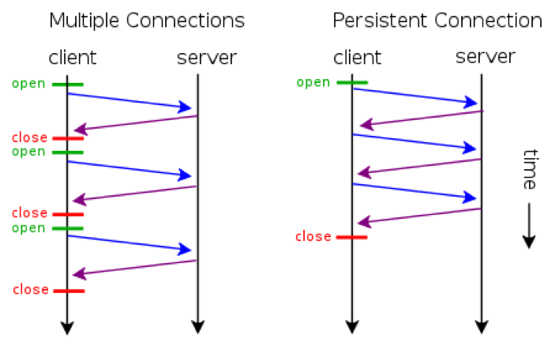
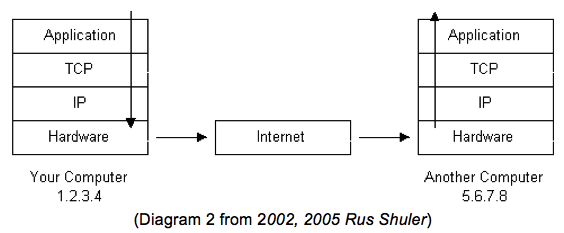
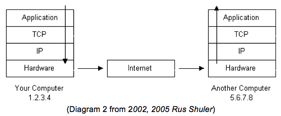

HTTP Features
-
Authentication
Sometimes, a website can have private pages or resources only accessible by certain users. When this happens, the server challenges the request to access, and the user has to provide the appropriate information to prove to the server that they should have access to it. This two-way process is authentication.
A framework by HTTP is available to be able to control access and authentication using defined mechanisms, namely:
- Basic, which has the user give unencrypted information. It should only be used with HTTPS
- Digest, which hashes the user’s password.
- NTLM, which prevents capturing passwords. (Through persistent connection)
A common response status is the
401 Unauthorizedstatus. It is sent when the user first tries to access the page, and the server sends a 401 status with WWW-Authenticate. This header field states which method to use for accessing.The user then responds with information, typically a username/email and password, in the form of an Authorization request. It will either return a
200 OKstatus (the correct authorization was given, and access has been given), a401 Unauthorized(the authorization was refused, and the Authorization request should be sent again), or a403 Forbidden(the user has not been given proper access for the page or resource). -
Persistent Connecions
It was already established that HTTP is a protocol used by applications to communicate with one another. Communication only happens when a user-agent, often browsers, establishes a connection to a server and sends a request message. The server then responds with a response message. A request from a browser may be serviced with just a single connection if the response containing the HTML file does not contain links that point to another resource.
For example, whenever a user-agent request for the HTML file of a website that only contains text and embedded formatting, a single connection is enough in order to serve the request. However, websites nowadays have a more complex composition: they contain links that points to another HTML files, images located in a certain directory, and CSS files for the design of the website.
In order for web browsers to display the contents of the website, it will first establish a connection before creating a request message to send to the server hosting the website. When it receives the response from the server, it will extract the HTML body in the response message. When it encounters a link in the HTML body that points to another resource, such as a CSS file, it will automatically send a request to retrieve said file. The same thing happens with other resources like images.
The early versions of HTTP were developed such that when a user-agent request a website, the server serves the request, and then terminates the connection immediately. When the browser reads the HTML body and encounters an external link, it will establish another connection and send another request to retrieve what it needs. Multiple connections will have to be established in order to properly render the website.
This is a problem because nobody might be patient enough to wait for the website to be rendered properly.
Persistent connection is a feature introduced in HTTP 1.1, allowing several resources to be fetched with the same connection. This addresses the problem induced by multiple connections. Persistent connections also allow the pipelining of request so that users can make multiple request without waiting for the response in the first request.
-
Chunked Transfer Encoding
HTTP communication usually takes place over TCP/IP connections (RFC2616). The TCP/IP is the protocol stack used by the Internet.
 

HTTP is an application-level protocol because it is used by network-aware applications (applications that communicate through the network) to communicate with one another.
The information that is communicated starts at the Application level. If the information is long, it will be broken into chunks of data, also known as packets. These packets travel from the application layer down to the TCP layer where port numbers are assigned to it.
After going through the TCP layer, it will go down to the IP layer where the packet receives its destination IP address. The packet also has numbers and hash codes that are used to bring back the chopped data back to its original form. These packets containing the necessary information are then converted to bits and travel through the Internet to get to its destination IP address and port.
When it gets to its destination, it will pass through the hardware layer, then back to the application layer. By the time it reaches the Application layer, it is expected that the information is back to its original form. Data loss can be determined if there is a changes in the hash code of a packet.
-
Content Negotiation
When multiple information is available, the user can opt to choose which form they might prefer. Content negotiation is a feature that allows this, and there are two types of negotiation.
Server-driven Negotiation is when the server decides for the user what is best/most appropriate, based on the contents of the request (usually by specifying Content-Type, Language, Encoding, etc). Agent-driven Negotiation has the user select from what is available instead. This often means requiring a second request.
Users can give their choice using Accept, in the order of preference. For example, adding this:
Accept: text/html, application/xml, */*to a request tells the server send the information first as a HTML file. If not available, then as XML, and if that is not available either, then whatever it can send.
Additionally, Accept-Charset, Accept-Encoding, and Accept-Language may also be used.
A
406 Not Acceptablestatus code will be returned if the user’s request cannot be fulfilled. -
Range Request
Also called a partial request, this allows the user/browser to request information (limited through ranges) from a server. This can help reduce interrupted data transfers, and allows users to download a part of the information first, then retrieve the rest later, or download in parts using only a single request.
A range request is only supported by servers if Accept-Ranges (a header field) is present in HTTP responses. It is usually expressed in bytes, and users can specify the range of bytes of the information to be sent, and can be either single part or multipart.
The Range header field of a request is what triggers the server to modify the information sent back. If-Range can also be used by specifying preconditions, usually in the form of either fulfilling the request if the information is unchanged, or sending the whole thing instead.
Single part:
Range: bytes=0-499would indicate a request for the first 500 bytes of a resource.Multipart:
Range: bytes=0-499, 600-650requests the first 500 bytes, then bytes 600 to 650.There are 3 responses that a range request can receive:
206 Partial Content(Successful request)- Must come with Content-Range and a payload consisting of the range (except when in a multiple part response, to which it will be sent per part instead).
416 Requested Range Not Satisfiable(Unsuccessful request)200 OK(No request was made/Unsupported)